Beaches of Mauritius
Discover the beauty of Mauritius' best beaches, from pristine white sands to crystal-clear lagoons and awesome activities for every taste.
Le Morne Beach

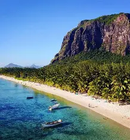
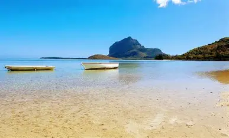
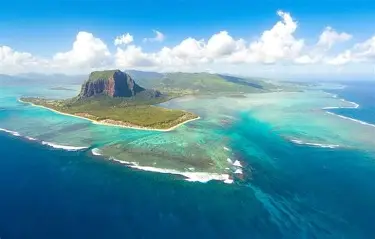
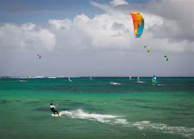

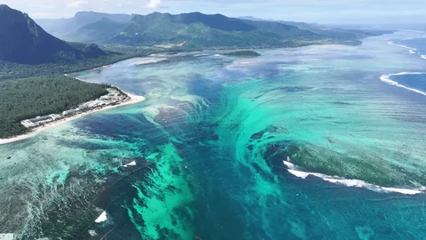
Location
Le Morne Beach is famous for its turquoise lagoon,calm waters, and the iconic Le Morne Brabant mountain rich in history and mysteries with also the underwater waterfall. It also provides various activities for everybody and every taste.
Activities
- Water sports: such as snorkeling, kitesurfing and swimming.
- Hiking:exploring the scenic trails and enjoy the view.
- Photography: capture the stunning sceneryand natural beauty.
- Sunset viewing and relaxation: enjoying the peaceful atmosphere and the end of the day take some UV ligt.
Flic en Flac Beach


Location
Flic en Flac Beach is one of the longest and most popular beaches on the west coast of Mauritius. It is known for its clear, calm lagoon, soft white sand, and stunning sunsets, making it ideal for swimming, snorkeling, and relaxing with family and friends.
Activities
- Diving and Snorkeling: Explore the crystal-clear waters and vibrant coral reefs, with guided trips available year-round.
- Beaches: Relax on the 8-km long sandy shores, perfect for sunbathing, swimming, and strolls.
- Dolphin and Whale Watching: Experience the thrill of seeing these majestic creatures in their natural habitat.
- Cascavelle Shopping Mall: Shop for local and international goods, and enjoy the vibrant atmosphere.
Flic-en-Flac offers the perfect blend of relaxation, adventure, and culture, making it one of Mauritius’ most popular coastal destinations.
Grand Baie Beach


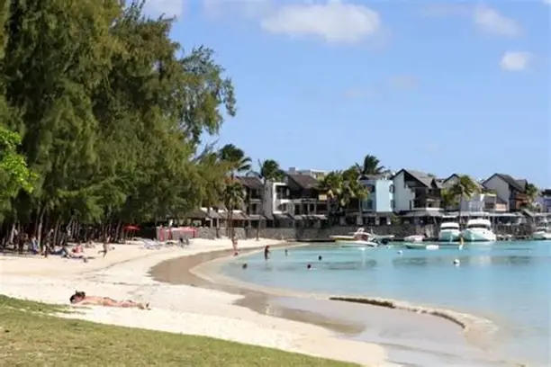

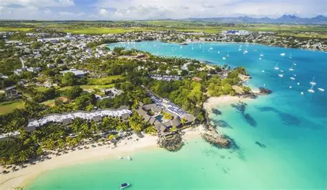
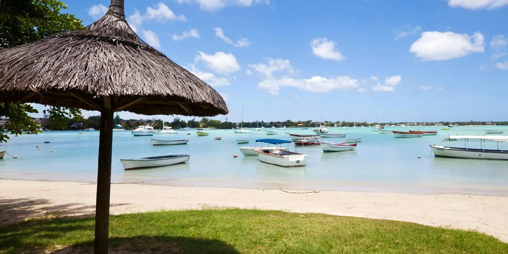
Location
Grand Baie Beach is well known for its vibrant atmosphere, nearby restaurants, nightlife, and water sports activities.
Activities
- Water Sports & Adventures: Catamaran cruises to nearby islands with snorkeling in crystal-clear waters Boat trips including fishing charters and glass-bottom boat tours Jet skiing, parasailing, paddleboarding, and kayaking Scuba diving and underwater sea walking Deep-sea fishing excursions
- Beach & Relaxation: La Cuvette Beach: Powdery white sand, perfect for sunbathing and swimming Public Beach: Family-friendly facilities and vibrant atmosphere Beachside picnics and sunset watching
- Nightlife & Dining: Beachfront bars and clubs Fresh seafood restaurants with ocean views
Grand Baie offers the perfect blend of adventure, relaxation, and cultural exploration on Mauritius' stunning north coast.
Pereybere Beach


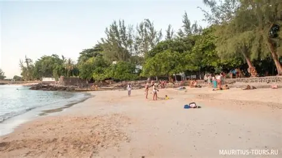


Location
Pereybere Beach is one of the most popular beaches in northern Mauritius, loved for its clear turquoise water, soft white sand, and relaxed yet lively atmosphere. It’s a favorite for both locals and tourists, offering excellent swimming conditions and easy access to food, facilities, and nearby attractions.
Activities
- Swimming and snorkeling:Pereybere is known for its calm, deep, and crystal-clear water, making it one of the best beaches for safe swimming all year round.Snorkel directly from the shore to spot colorful tropical fish and coral, especially near the rocky edges of the bay Kayaking & Paddleboarding: Rent kayaks or paddleboards from nearby vendors and explore the bay at your own pace. Glass-Bottom Boat Trips: Enjoy short boat rides that let you admire marine life without getting into the water. Diving Trips (Nearby): Scuba diving centers in the north offer trips to nearby reefs and dive sites suitable for beginners and experienced divers.
- Sunbathing & Picnics: The clean sand and shaded areas make Pereybere perfect for relaxing, picnics, and spending the day by the sea. Public Facilities: The beach is well-equipped with toilets, showers, parking, and lifeguards, making it ideal for families. Sunset Views: Pereybere offers beautiful sunset scenery, perfect for evening walks and photos.
- Food, Culture & Local Vibes: Street Food & Snacks: Enjoy local favorites like fried noodles, samosas, grilled seafood, fresh coconut water, and ice cream sold along the beach. Nearby Restaurants & Cafés: A variety of casual eateries and restaurants are within walking distance, offering Mauritian and international cuisine. Local Atmosphere: Pereybere is a great place to experience everyday Mauritian beach life, especially on weekends when locals gather to relax and socialize.
With its mix of clear waters, easy swimming, local food, and welcoming atmosphere, Pereybere Beach is perfect for visitors looking for a relaxed beach day with plenty of small activities and local charm.
Mont Choisy Beach


Location
Mont Choisy Beach is one of the longest and most beautiful beaches in northern Mauritius, known for its wide shoreline, calm lagoon, and peaceful atmosphere. Lined with casuarina trees, it’s ideal for visitors looking for space, shade, and a more laid-back beach experience.
Activities
- Water Activities: Swimming: The shallow, calm lagoon makes swimming safe and enjoyable for all ages. Snorkeling: Light snorkeling is possible near rocky areas, with small fish and coral. Kayaking & Paddleboarding: Available at certain spots along the beach, perfect for relaxed exploration.
- Relaxation & Beach Life: Long Beach Walks: The wide sandy stretch is perfect for walks, jogging, and beach games. Picnics & Shade: Casuarina trees provide natural shade, ideal for picnics and family outings. Quiet Atmosphere: Less crowded than nearby beaches, great for unwinding. 2 sand fields for beach sports such as volleyball and footballbut you need your own equipment except the goal posts.
- Local Food & Facilities: Street Food: Enjoy local snacks, grilled food, and refreshing drinks from nearby vendors. Public Facilities: Parking areas, open spaces, and basic amenities are available.
- Scenery & Nearby Spots: Sunsets: Stunning sunsets with wide ocean views and golden skies. Nearby Beaches: Close to Trou aux Biches and Grand Baie for more activities and dining options.
With its calm waters, long sandy shoreline, and peaceful vibe, Mont Choisy Beach is perfect for families, couples, and anyone seeking a relaxed day by the sea.
Tamarin Beach


Location
Tamarin Beach is a scenic west-coast beach in Mauritius, known for its natural beauty, surf-friendly waves, and relaxed local atmosphere. With its darker sand, open ocean, and mountain backdrop, it offers a more rugged and authentic beach experience, especially popular for surfing, dolphin watching, and stunning sunsets.
Activities
- Water Activities: Swimming: Suitable in calm areas, but waves and currents mean extra care is needed. Snorkeling: Limited snorkeling near rocks during calm sea conditions. Surfing: One of the top surfing spots in Mauritius, with steady waves and surf schools nearby for beginners and advanced surfers. Kayaking & Paddleboarding: Available at certain spots along the beach, perfect for relaxed exploration. Dolphin Watching: Early-morning boat excursions offer a chance to see dolphins in their natural habitat.
- Relaxation & Beach Life: Beach Walks & Jogging: Long, open shoreline ideal for walks, jogging, and enjoying the scenery. Relaxation & Picnics: Quiet, natural beach atmosphere popular with locals.
- Scenery & Nearby Spots: Sunset Viewing: Famous for breathtaking west-coast sunsets over the ocean. Photography: Great spot for capturing nature, surfers, and dramatic skies.
Tamarin Beach is known for its natural scenery, surf culture, and relaxed local vibe, very different from the calm lagoon beaches in the north. Perfect for surfing, sunset watching, and nature lovers.
Belle Mare Beach


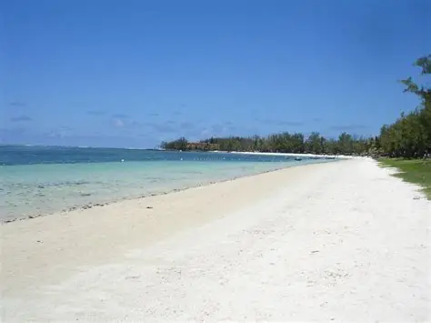
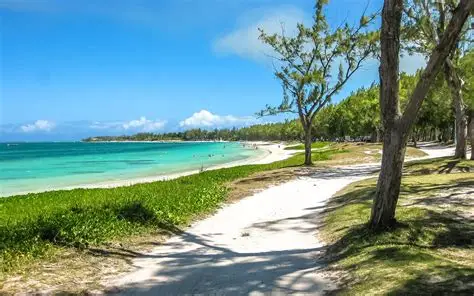
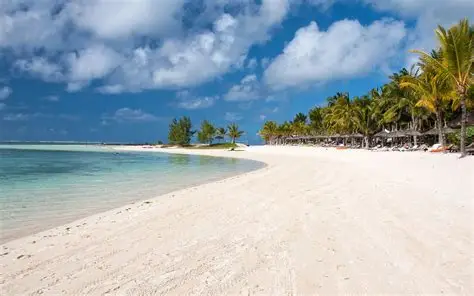

Location
Belle Mare Beach is one of Mauritius's most stunning stretches of coastline, famous for its powdery white sand and crystal-clear turquoise waters. Located on the island's east coast, this pristine beach offers the perfect blend of relaxation and adventure, making it an ideal destination for beach lovers and water sports enthusiasts alike.
Activities
- Water Activities: Swimming and Snorkeling :The calm, shallow waters and excellent visibility make Belle Mare perfect for swimming and discovering colorful marine life just offshore. Water Sports: Try kitesurfing, windsurfing, or stand-up paddleboarding in the gentle waves, with equipment rentals and lessons available along the beach. Deep-Sea Fishing - Charter a boat for an exciting day of fishing in the Indian Ocean, where you can catch marlin, tuna, and other trophy fish.
- Relaxation & Beach Life: Beach Picnics - Relax under the shade of casuarina trees with a picnic while enjoying the stunning ocean views and sea breeze. Relaxation & Picnics: Quiet, natural beach atmosphere popular with locals.
- Scenery & Nearby Spots: Sunset Walks - Stroll along the endless stretch of white sand during golden hour for breathtaking views and perfect photo opportunities. GoodSpot for Photography - Capture the vibrant colors of the beach, ocean, and sky, especially during sunrise and sunset.
With its stunning natural beauty, calm waters, and variety of activities, Belle Mare Beach is a must-visit destination for anyone looking to experience the best of Mauritius's coastal paradise.
Ile aux Cerfs Beach
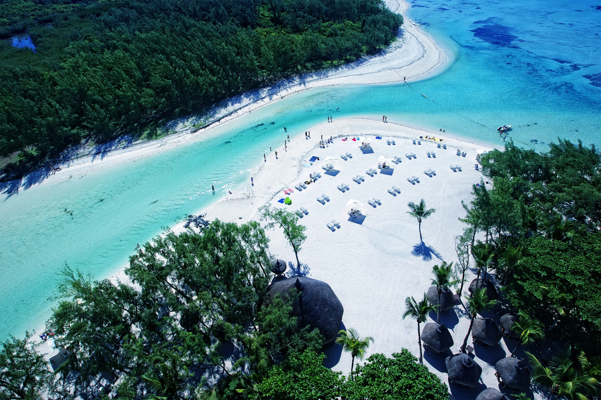


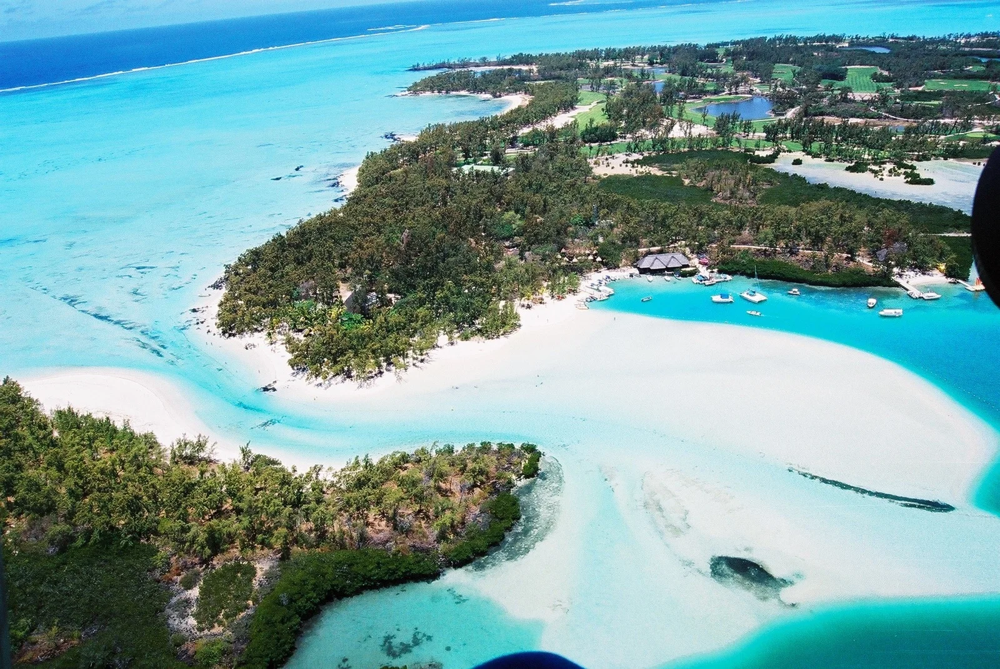
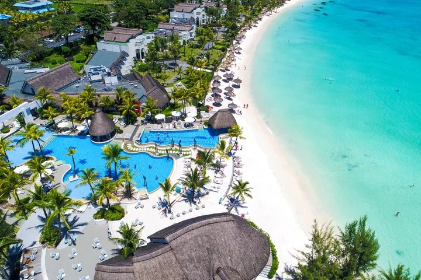

Location
Ile aux Cerfs is a breathtaking island paradise located off the east coast of Mauritius, just a short boat ride from Trou d'Eau Douce. This tropical haven is famous for its postcard-perfect beaches, crystal-clear lagoons, and lush vegetation. With its stunning natural beauty and array of activities, Ile aux Cerfs is a must-visit destination for anyone exploring Mauritius, offering everything from adrenaline-pumping water sports to peaceful relaxation on pristine white sands.
Activities
- Water Activities: Parasailing :Soar above the turquoise lagoon for breathtaking aerial views of the island and surrounding coral reefs. Beach Hopping :Explore multiple stunning beaches around the island, each offering its own unique charm and secluded spots. Water Skiing and Wakeboarding : Experience the thrill of gliding across the calm lagoon waters with equipment and instruction available on-site. Tube Riding :Hold on tight for an exciting ride as you're pulled across the water on an inflatable tube. Tube Riding : Hold on tight for an exciting ride as you're pulled across the water on an inflatable tube. Snorkeling: Discover colorful marine life in the clear shallow waters surrounding the island's coral reefs. Undersea Walk :Experience walking on the ocean floor with a special helmet, getting up close with tropical fish without needing to swim. Speedboat Tours:Take an exhilarating speedboat ride around the island or to nearby attractions like the Grand River South East waterfall.
- Relaxation & Beach Life: Sunbathing and Relaxation : The island's pristine beaches with soft white sand and gentle waves create the perfect setting for sunbathing, reading, or simply unwinding by the sea. Relaxation & Picnics: Quiet, natural beach atmosphere popular with locals. Golfing - Play at the spectacular 18-hole championship golf course designed by Bernhard Langer, featuring stunning ocean views.
- Scenery & Nearby Spots: Island Photography : Capture stunning photos of the island's natural beauty, from turquoise waters to dramatic coastal landscapes. Barbecue Lunches - Enjoy fresh grilled seafood and traditional Mauritian dishes at beachside restaurants and barbecue spots.
Île aux Cerfs is a famous private island off the east coast of Mauritius, known for its white sandy beaches, crystal-clear turquoise lagoon, and tropical scenery. It’s a popular day-trip destination, offering a mix of relaxation, water sports, and scenic views—perfect for families, couples, and adventure lovers.
Trou aux Biches Beach


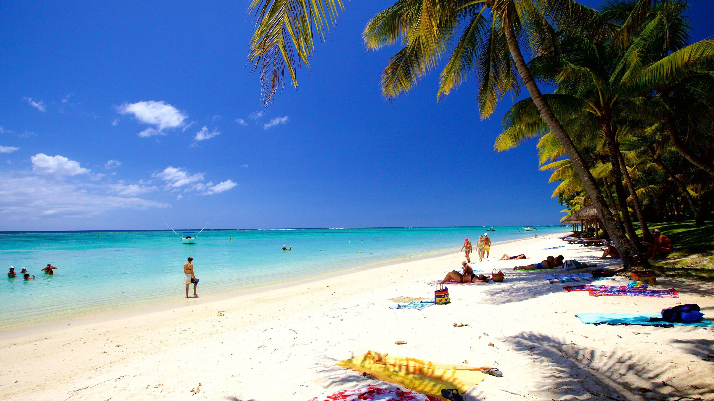


Location
Trou aux Biches is a picturesque beach village on the northwest coast of Mauritius, renowned for its calm, shallow lagoon and laid-back atmosphere. With its soft white sand, swaying palm trees, and protected waters, this family-friendly destination offers a more tranquil alternative to busier beaches while still providing plenty of activities and excellent snorkeling opportunities right from the shore.
Activities
- Snorkeling :Explore the vibrant coral reefs teeming with tropical fish just a few meters from the beach, perfect for beginners and experienced snorkelers alike. Diving : Discover nearby dive sites including shipwrecks and coral gardens, with several dive centers offering courses and guided excursions. Catamaran Cruises : Set sail on a relaxing catamaran trip along the coast, often including snorkeling stops, lunch, and drinks on board. Kayaking - Paddle through the calm, clear waters of the lagoon at your own pace, exploring the coastline from a different perspective.
- Relaxation & Beach Life: Beach Relaxation - The calm lagoon and soft sand make it ideal for sunbathing, swimming, and leisurely beach days. Beach Volleyball - Join locals and tourists for friendly games on the sand, or simply relax and watch from the shade. Seafood Dining - Sample fresh catch at beachfront restaurants and local eateries serving authentic Mauritian cuisine with ocean views.
- Scenery & Nearby Spots: Shopping at Local Markets - Browse the nearby public beach area for local crafts, souvenirs, and authentic Mauritian products from beach vendors. Spa and Wellness - Indulge in rejuvenating treatments at resort spas or enjoy beachside massage services. Sunset Watching - Experience spectacular sunsets over the Indian Ocean from the beach, creating a magical atmosphere perfect for romantic evenings.
With its calm lagoon, soft white sand, and beautiful sunsets, Trou aux Biches is the perfect place to unwind and enjoy the peaceful side of Mauritius, making it ideal for swimming, snorkeling, and relaxing by the sea.